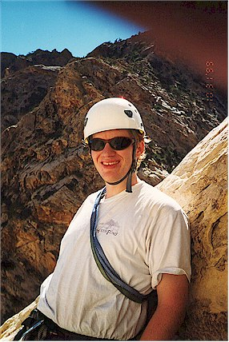
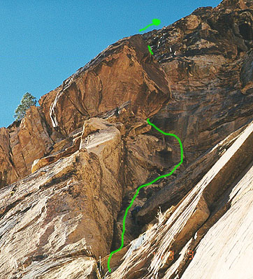

Red Rocks "Catwalk"
- Grade III, 5.6+, 8 pitches
- October, 1999
These bushes have a sick sense of humor, I thought. My cherished black climbing pants were in tatters. I felt like a faux-“delirious desert traveler,” as the tears in the fabric were too artistically jagged to be real. Inspired by Mattias, the “frugal German,” I had lovingly repaired rips with needle and thread before, but this time it was beyond my kin. With characteristic kindness, Steve’s laughter was no louder nor longer than my own!
Okay, so here we are, Steve and I, trying to zoom up rugged Oak Creek for our first adventure climb of the trip: Catwalk. This climb is in the very back of the canyon, and despite a pre-dawn start, we now stood puzzled in burning heat, trying to guess the route ahead. We’d allocated two hours for the approach, and we’d now burned three. Even still, we’d been hopping the small rocks and climbing the big ones as fast as we could. Steve’s daylight-o-meter went off, and we both soon calculated that we didn’t have enough time to finish without risking a night out.
Darn!
It was 9 am, the crickets were chirping, the sky was blue, and we were talking about retreating. In scouting the route, I had gone ahead on fourth class terrain (ie, the climbing is very easy, but a fall could be fatal) and thought I spied the base of the route another 40 feet distant. After a scary downclimb of that same terrain, I was feeling like this “initial investment,” and our hard work “zooming” up the canyon (yeah, right, I can hear Jeff say), we should try the route. We both felt strong, and noticed the words “escape possible” after pitch five on the route. Yes! From our vantage point, it looked like this would provide an easy ridge walk, and then a stroll down the back side of the mountain. Not inclined to gamble with our lives, Steve’s eyes lit up as the daylight-o-meter admitted that we’d have just enough time, by cutting off the last three pitches. Go!
!A good portrait of Steve at the start of pitch four.](images/steveport.jpg)


Leaving a pack 200 feet above the stream-bed, we traversed on my pioneered route, then another rope length, and we had come even with the base of pitch two on the topo map. We saw a crack leaning left and up, crossed by numerous black water marks. Steve took the first lead, frictioning out on bald faces, and up to a bulge which marked the belay. Building the anchor took some creativity, and he had just the bits of metal to lodge into just the right constrictions to build a good one. Pant tatters blowing in the light breeze, I climbed up to admire his handiwork.
I geared up, muttering supplications to the slight overhang above, and soon was in the mix. Gently, the rock led me around it to the left, and a good bit of metal protected the move. It’s funny, that just as we get ourselves into these nerve-wracking situations, we’re happy for all the help we can get, once truly confronted by a sickening drop and a partner’s worried expression!
I built a gear anchor in a shaded little cove with an excellent view on the climb so far. Steve arrived with a grin and a flotsam of slings and metal. The next pitch was about 165 feet, so we expected to do some simul-climbing. For you flatlanders, this means that the follower will begin climbing before the leader has reached an anchor. This takes some trust in your partner, since both of you are connected by the rope, and anchored to the rock only by the bits of protection the leader got in on his way up. Steve had the lead, but a hard move repelled him, so we traded places. I found here a perfect fist jam: slam your fist into the crack, and flex it. Lean back and climb past, feeling each chip of sandstone and grit against your palm, hypersensitive for signs of slippage.
The climbing eased off soon after, and I found myself admiring the surroundings. The beautiful line we had ascended, the still canyon below and judgemental walls across from us. I had to slow down and savor this, the best part of climbing: becoming aware of the dramatic position you occupy in the landscape, the tenuous and fragile nature of your residence there, the silence and self-reliance of the lead. All this, crystalized in the moment, captured to be remembered forever.
Fulfilled, I called out to Steve to slow down and absorb whatever energy the pitch might offer him too. We took some pictures and drank water. Steve took off, climbing well on our vertical trail. He looked for the “escape possible,” finding only loose and uncertain gullies leading up to the right. I fretted as I followed him, coming to a cool shaded belay cove. From his vantage point I saw it too - we’d be better off continuing the climb than venturing onto the “escape.”
Girding up, I started out enjoying pitch 6, but after a resting ledge, I faced a finger crack with no footholds that reminded me of Yosemite. A tough move brought me to a fixed Camelot, the only evidence we’d seen yet that anyone else had ever been here. I clipped to it, and continued, getting into uncertain terrain pretty quickly. Looking down, I saw I’d climbed well above the Camelot, with no chance of gear ahead. Blood pounded in my ears, and my breath came shorter. I could feel my body tightening up! I had to shove it away - there was nothing to do but climb on. Here a wall folded down on the crack, and we’d call it a chimney. I could put my back against this wall, with feet on tiny nubbins opposite. Breathing regularly, I knew I was in the “no falls allowed” zone, and with forced calm, continued on. As soon as I gained this control, I was out of the woods, with a “Thank God” hold on the opposite wall, and a step up to a bushy ledge.
Regaining composure, I belayed Steve, advising him to attach the pack to a sling below him, as the chimney got pretty tight. He got up, and I related my difficulties with the chimney. I was worried because the next pitch was rated a bit harder, and I didn’t feel ready for it. Neither was Steve, not having climbed as much this summer as I. I knew I needed to do it, but together, we turned something that could have been very stressful into a positive experience. Making an effort to change our increasingly dark attitudes, and realizing that the steep, black crack above was well protected (unlike what I’d just encountered), we were soon smiling again. Steve’s encouragement after each tough move propelled me up, and I began to realize why pitch 7 is “the best pitch on the route.” Well protected, and moderately streneous, the climber feels safely attached, yet finds freedom in the puzzles each move presents. Black plates adhering to the surface of the light brown stone provided the occasional “right on!” hold. Finishing the pitch, I felt I had transcended a barrier. I had climbed through fear, into light. It took my partner’s psychic energy for this to take place. It was a palpable force that sent me up the rock with energy to spare.
We had both given a lot of ourselves here, and shared huge grins with the canyon below!
Getting down is another story in itself. I’ll just record a few impressions.
- Frictioning down a smooth, multi-colored water trough
- endless downclimbing
- talking about the awesome climb
- Finding our packs just after darkness falls
- Slipping into tennis shoes (ahh!)
- Drinking water from the stream
- Minor panic sliding down a smooth slab in the dark (For me; Steve wisely took a different route!)
- 12-mile-distant lights of the visitor center appeared to be merely 300 yards distant in the clear dry air
- Stumbling along, reaching the car at 10:45 pm
A happy call to home, and back to Jim’s apartment and hospitality!